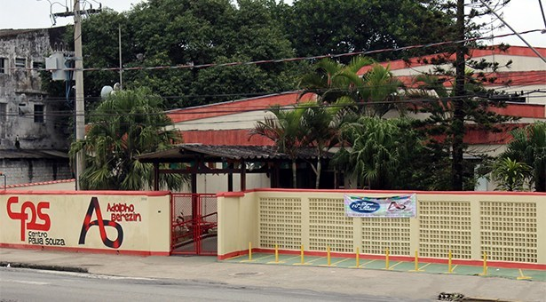

A escola Etec Adolpho Berezin é uma escola do Centro Paula Souza possuindo ensino médio e cursos de tarde até de noite, localizada na cidade de Mongaguá.

O Centro Paula Souza (CPS) é uma autarquia do Governo do Estado de São Paulo, vinculada à Secretaria de Desenvolvimento Econômico. Presente em aproximadamente 300 municípios, a instituição administra 223 Escolas Técnicas (Etecs) e 73 Faculdades de Tecnologia (Fatecs) estaduais, com 291 mil alunos em cursos técnicos de nível médio e superiores tecnológicos.